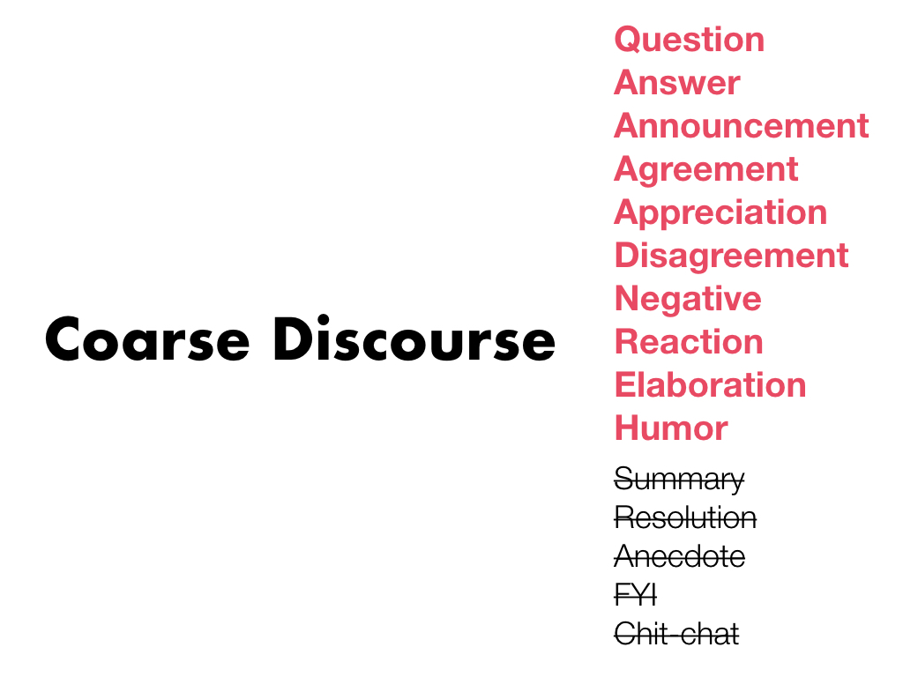

Characterizing Online Discussion Using Coarse Discourse Sequences
Authors
Amy X. Zhang, MIT CSAILBryan Culbertson, Google
Praveen Paritosh, Google
Abstract
In this work, we present a novel method for classifying comments in online discussions into a set of coarse discourse acts towards the goal of better understanding discussions at scale. To facilitate this study, we devise a categorization of coarse discourse acts designed to encompass general online discussion and allow for easy annotation by crowd workers. We collect and release a corpus of over 9,000 threads comprising over 100,000 comments manually annotated via paid crowdsourcing with discourse acts and randomly sampled from the site Reddit. Using our corpus, we demonstrate how the analysis of discourse acts can characterize different types of discussions, including discourse sequences such as Q&A pairs and chains of disagreement, as well as different communities. Finally, we conduct experiments to predict discourse acts using our corpus, finding that structured prediction models such as conditional random fields can achieve an F1 score of 75%. We also demonstrate how the broadening of discourse acts from simply question and answer to a richer set of categories can improve the recall performance of Q&A extraction.
PDF version of paper
Github repository of the entire dataset
This work was written up as a Google Research blog post
Presentation
This talk was given at ICWSM 2017 in Montreal, Canada.
So much of the Internet and so much of people’s use of the Internet in today’s world is filled with discussion.
Just as one example, the site Reddit, is the 4th or the 8th most visited site in the world, with over 50,000 communities, called subreddits, and over 900 million threads.
And actually, much of the world’s interesting and useful information is locked up in these discussion forums and difficult to access in other forms.
For example, look at some of these threads that I pulled up from the AskReddit community earlier. If you were interested in finding out which person in all of human history has been the biggest waste of potential or what kinds of movies get watched 10+ times, how else might you find it?
Well if you can find the thread or multiple threads where people are talking about it, you have to then go sift through the entire discussion to get an overview or find the parts of the discussion that you are interested in, which can be really time-consuming and difficult.
For example, here’s the discussion where people are talking about who in history has been the biggest waste of potential. How might we find out the people who are mentioned the most or the people for whom there is some disagreement over whether or not they were a waste of potential?
There’s a lot you could do to get at this understanding, but one very first step might be to analyze the different comments in the discussion to see how they’re contributing to the discussion. So here, it starts with a question, some posts are answering the question, others are disagreeing with the answer or making a joke.
There’s a lot you could do to get at this understanding, but one very first step might be to analyze the different comments in the discussion to see how they’re contributing to the discussion. So here, it starts with a question, some posts are answering the question, others are disagreeing with the answer or making a joke.
And this strategy is the one we decided to focus on a first step towards understanding discussions at a high level. So can we get a sense of the roles and relations that each comment plays in the discussion?
Actually, there’s a lot of work dating back many decades in this area, which is broadly referred to as “discourse acts” or speech acts for when it is spoken dialogue.
Discourse acts are categories that describe a statement’s performative function in communication. When someone says something in a discussion, what action are they performing?
Discourse acts are categories that describe a statement’s performative function in communication. When someone says something in a discussion, what action are they performing?
And with this prior work, lots of people have come up with many categories of discourse acts for conversation, such as DAMSL and DiAML for spoken discourse, and rhetorical structure theory for the argumentation within a single document
Here is what DiAML looks like.
Many of these didn’t really suit our needs however, so we’ve developed our own set of categories we are calling Coarse Discourse.
So why didn’t we just use an existing categorization?
First off we want to focus on discussion forums as opposed to spoken discourse or chat or discourse within a document.
We also wanted to make it general enough to cover most types of discussion. There are several existing ones that focus on technical help forums or customer service threads.
Third, we needed for it to be coarse enough so that anyone could annotate it easily and quickly, not just expert linguists. As you saw, many existing ones have 20 or 30 categories sometimes with difficult definitions or many levels of subcategories.
And finally, we wanted there to be an acceptable level of agreement between annotators.

In the end we came up with 9 categories, iteratively created over the course of 6 pilots with experts as well as with crowd annotators on random samples of 20 threads on Reddit at a time.
You can see some of the categories we ended up rejecting - these were because they appeared too infrequently or there was too little agreement or overlap with other categories.
Now I’ll move on to describe the dataset we collected of discourse acts.
There’s a lot more details of our sampling method in the paper, but at a high level, we took a random sample of 10,000 threads from the site Reddit. From those threads, we had every comment on every thread annotated by 3 crowd workers with its coarse discourse act and its relation to a prior comment.
For example, in this discussion about pink eye, we can see that the first comment is asking a question. There are two answers in response to the question and one comment is making a joke. In response to one answer, the author has expressed appreciation and there’s also an elaboration of the answer. And notice we have both the role and relation shown here for each post.
As far as we know, this is the largest dataset of manually annotated discourse acts and relations within discussion threads out there, perhaps by an order of magnitude. We’re releasing it publicly at the following location so please, check it out.
Just to give you a quick sense of the data, over 40% of the comments annotated are answers, with the least frequent being the Negative Reaction category.
Beyond individual comments however, one can look at common sequences of discourse acts that are linked together. For instance the most common link of two comments was Question followed by Answer, at nearly 40%.
You can go further to see what the most common responses to a Q&A pair are. In our dataset, that would be Elaboration, Appreciation, and a followup Question.
So now that i’ve shared these discourse acts and sequences of discourse acts with you, what can we learn from them about communities and the conversations that happen within them?

As I had mentioned earlier - there are thousands and thousands of communities on Reddit.
Say however, that I’m interested in cars, just a random example.
But actually there’s still hundreds of communities just dedicated to cars!
What if I have a question about what car to buy? Some of these communities sound useful.
What if I just want to ogle at beautiful cars? Seems like there’s a couple places for that as well.
What if I’m just looking to goof off at car related jokes?
As you can see, sometimes it’s unclear what kind of discussion happens within a community. But looking at the prevalence of higher level discourse sequences, we can get an idea.
There are some communities that seem to act like community Q&A sites like StackOverflow or Quora - where people post questions, and there are many people posting answers and upvoting them. We can find several by searching for subreddits with the greatest percentage of answers.
As a counterpoint, a different set of subreddits emerge when you look at subreddits with the greatest percentage of questions. Some of these have many questions unanswered such as Ask Me Anything or a much higher volume of follow-up questions to answers.
We also see more communities focused on argumentation, which we can characterize as a chain of disagreements. Interestingly /r/canada is on this list, probably they are having very civil and polite disagreements though.
But we also see other subreddits focused on debate, such as change my view or political discussion or the dungeons and dragons subreddit. As you can see we can see how long these disagreements are on average.
But we also see other subreddits focused on debate, such as change my view or political discussion or the dungeons and dragons subreddit. As you can see we can see how long these disagreements are on average.
We also see many subreddits where the majority of posts begin with announcements of some sort, whether that be a link to another webpage or some sort of update to the community. When we looked at the kinds of conversations that these subreddits have in response to Announcements, we see that these communities cluster into four main clusters. I’ll just mention one of them - the first cluster has a disproportionate number of Appreciation posts in the comments, and we found that this cluster was mostly communities like keto and stop drinking where members post updates on their life and other members provide encouragement and everyone shows appreciation for each other.
So, given the things we can learn from discourse sequences about a community and about individual discussions, how good are off-the-shelf machine learning models at predicting discourse act information?
So we developed models to predict the discourse act of a comment out of the 9 in our coarse discourse categorization, specifically focusing on the threads in our dataset that had a majority agreement among the three annotators. So our annotators provided ground truth. We chose to ignore predicting the relation annotation as we found that this overlapped for the most part with Reddit reply structure, though this would be an additional issue for append-only forums such as TripAdvisor.
Here are the features that went into the models we used. We looked at linguistic content within the comment, including punctuation. We looked at the position of the comment in the thread, both raw and normalized.
We looked at which sub reddit the comment is from, since as we saw some may have more of a certain kind of discussion than others.
Finally, we looked at features related to the author, such as whether they wrote the initial post or wrote the parent post, as well as features related to the entire thread of discussion, such as how deep it is, how wide it branches, whether it starts with a link or comment to the community, and some others.
We came up with two baselines to compare our models to. One which marks everything as Answer and a slightly smarter one which marks all first posts and all posts with a question mark as questions and everything else is answers. We compare these two baselines with some well-known machine learning models, including logistic regression and two structured prediction models that take into account the sequence of labels in a thread, including hidden markov models and conditional random fields.
Unsurprisingly, we found that structured prediction models performed the best, with conditional random fields achieving 75% F1, which beat our best baseline which had a 38% F1.
Of course this performance varies greatly from discourse act to discourse act. Interestingly we found that the F1 scores from our best model had a strong correlation with our annotators’ inter-rater reliability. So the discourse acts that were hard for people to annotate, such as humor which is notoriously difficult to pinpoint, were also hard for the models.
I will also mention that we did ablation tests and out of all our feature categories, we found that structure and content both were very important features while community, thread, and author features were not as important.
We also found when we focused on specifically Q&A prediction that when we compare a model that is trained on all 9 categories to a model that is trained only on Q&A, the model that is trained on all 9 categories performs better on recall and slightly better overall.
Finally, I wanted to talk briefly about how knowledge of discourse acts can be useful for designing better interfaces and applications.
First, alerting moderators or admins of a forum or instructors of a MOOC class forum to unanswered questions, unresolved arguments. I’ve also already illustrated how this information could help with community recommendation or communication of community norms to newcomers.
Knowledge of discourse acts could also help with discussion summarization. Since most document summarization techniques are extractive, for discussion summarization we could be smarter about which comments to extract information from. In a Q&A thread, we might want a summary of the answers and in an argument thread, we might want a summary of the pro statements and a summary of the con statements.
That in turn could be useful for search engines and virtual assistants that post short snippets from forums in the search results. For forum search results, we could do better than just grabbing from the title or first sentence of the first post.
So in conclusion, I’ll just quickly summarize what I went over today. First, we devised a simplified way for comments to be annotated called coarse discourse. We collected and released a new public dataset of 10,000 threads from Reddit, annotated with discourse acts. We show how this information can be used to characterize major sequences of discussion as well as communities overall. We test models for predicting discourse acts, finding they achieve a 75% F1 score. And we imagine improvements to existing applications and interfaces based on this knowledge.
This is a blog post on the Google Research blog about it.
So please check out our dataset and consider using it for your research. I’d like to thank the many people at Google who supported us as well as our annotators, especially Ka Wong for helping in the last few months with getting this dataset publicly released. Thank you!